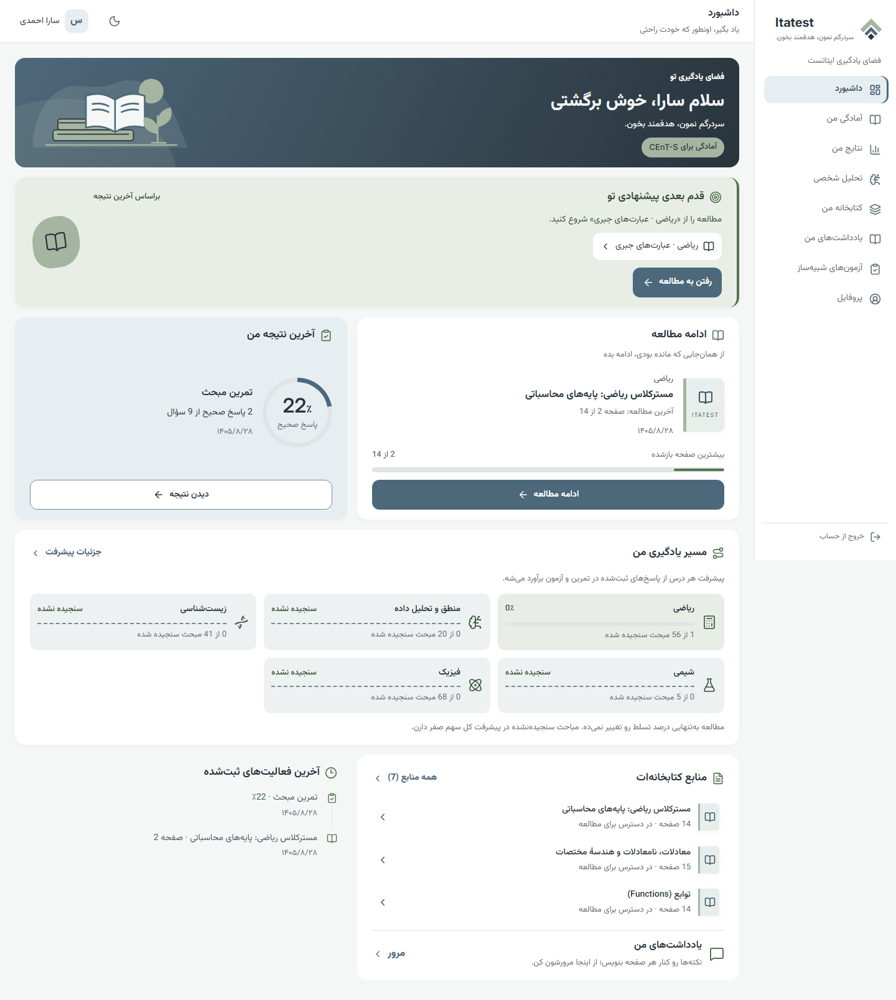
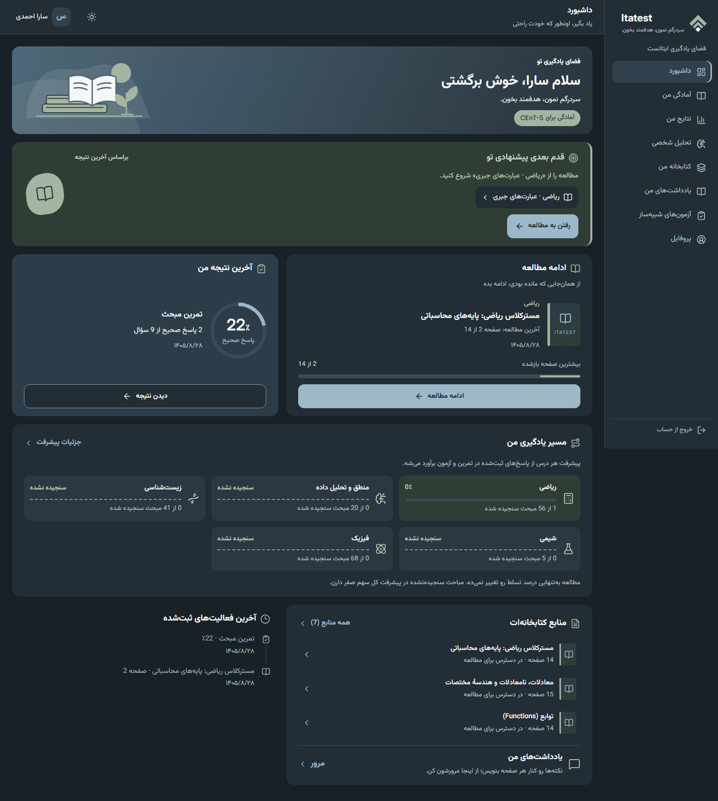
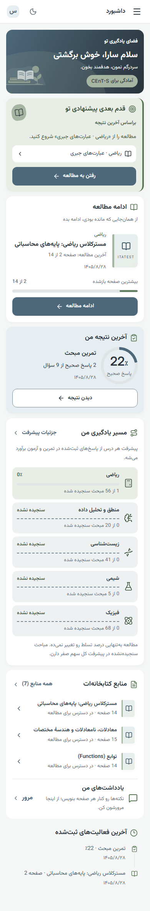
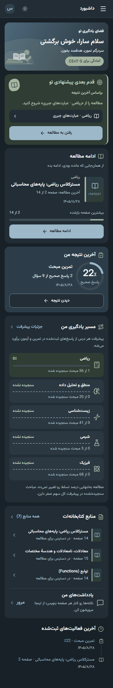
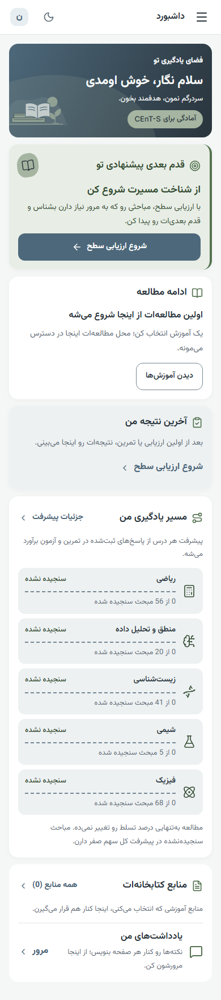
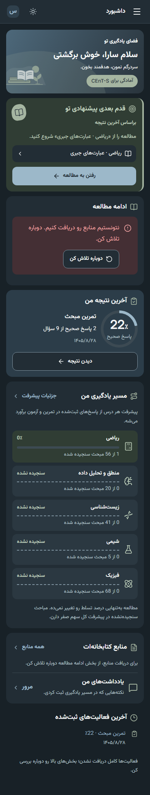

Returning · desktop · Light
Connected local responses; saved page, submitted practice, real recommendation and unassessed subjects.

Returning · desktop · Dark
Independent dark surfaces, Sage/Slate hierarchy and illustration visibility.

Returning · mobile · Light
Action-first composition at 390px; reading position and result remain separate.

Returning · mobile · Dark
Existing saved reading and assessment records form the compact timeline.

New learner · mobile · Light
Separate connected account without history. One prominent diagnostic action; no invented activity or progress.

Recoverable error · mobile · Dark
Injected library 503. The persistent original error and real retry stay beside resume; other streams remain usable. Recovery is asserted without an extra screenshot.
